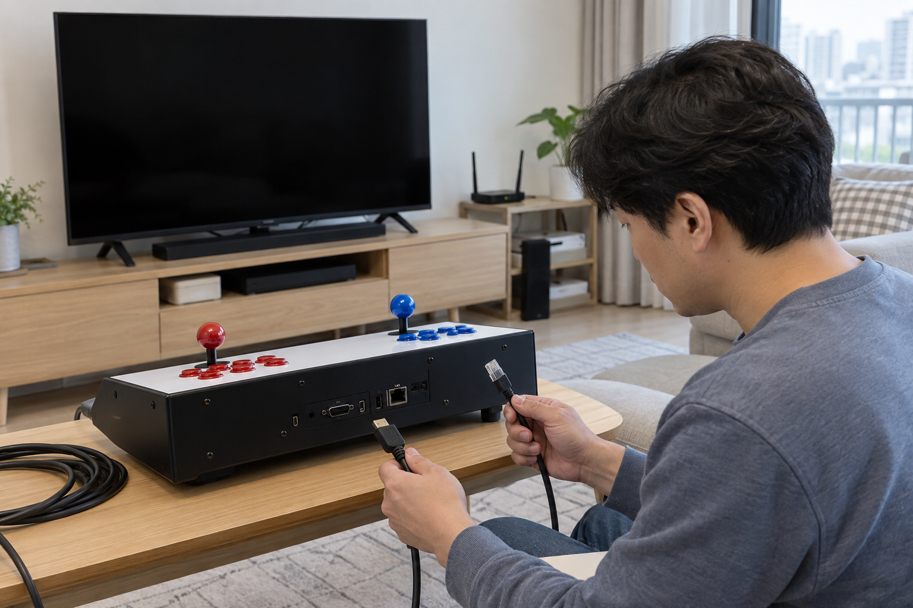
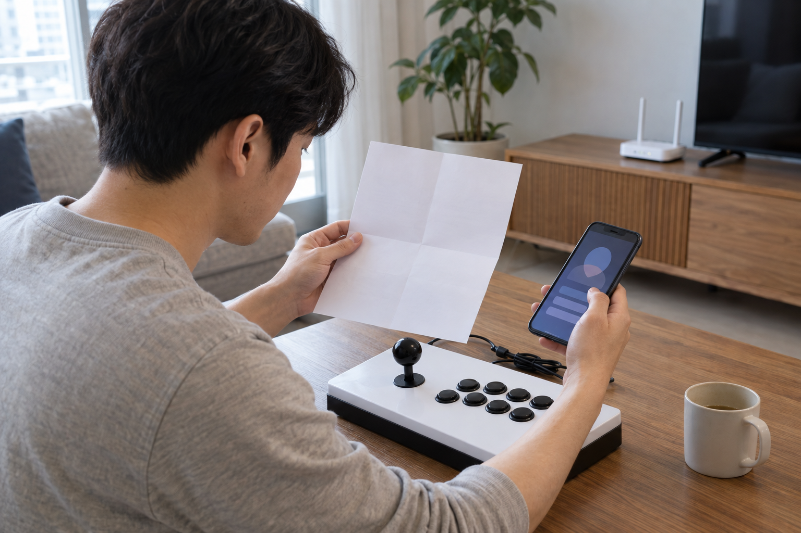

가정용 오락기에 인터넷이 항상 필요한 것은 아니며, 필요 여부는 제품과 사용할 기능에 따라 다릅니다. 평소 게임 실행, 업데이트, 스마트폰·PC 연동을 나눠 제품 안내를 확인하고, 안내가 없으면 임의로 네트워크를 설정하지 마세요.

인터넷과 화면 연결을 구분하세요
TV에 영상과 소리를 보내는 케이블 연결이 곧 인터넷 연결을 뜻하는 것은 아닙니다. 전원·화면·조작기와 네트워크는 서로 다른 조건으로 나눠 확인하세요. TV 연결 준비는 TV 연결형 오락기 설치 방법에서 이어서 볼 수 있습니다.
TV 연결 케이블과 인터넷 연결은 목적이 다르므로 각각 확인해야 합니다.

사용 상황별로 필요 조건을 나누세요
먼저 평소처럼 기기에 들어 있는 게임을 실행할 때 필요한지 확인하세요. 다음으로 게임 추가나 소프트웨어 업데이트, 무선 기능을 쓸 때만 별도 연결이 필요한지 안내서와 판매 페이지에서 찾으세요. 업데이트 지원은 제품별로 다를 수 있으므로 오락기 게임 추가·업데이트 확인의 순서도 함께 확인하세요.
평소 게임과 업데이트, 별도 연동은 인터넷 필요 여부를 나눠 확인해야 합니다.
- 평소 게임을 시작할 때
- 게임이나 소프트웨어를 추가·업데이트할 때
- 스마트폰·PC·무선 기능을 연동할 때
- 문제 확인을 위해 판매자 안내를 따를 때
제품 목록의 연결 표현을 확인하세요
노리박스 제품 목록에는 TV연결형 오락실게임기, PC지원 무선 조이스틱, 무선 MHL 미러캐스트와 하이퍼PC SW 업데이트 요청이 서로 다른 상품으로 안내됩니다. 제품명에 ‘연결’이나 ‘무선’이 있다는 이유만으로 인터넷이 항상 필요하다고 판단하지 말고, 구매할 정확한 제품의 설명을 읽으세요. 모호한 표현은 제품명과 사용할 기능을 함께 적어 문의하세요.
‘연결’과 ‘무선’이라는 표현만으로 인터넷 필요 여부를 단정하면 안 됩니다.
설정 전에 모델과 문의 내용을 적으세요
네트워크 메뉴가 보이더라도 제품 안내 없이 설정을 바꾸거나 임의의 파일을 내려받지 마세요. 제품명·게임팩·하려는 기능·현재 화면을 정리한 뒤 해당 제품의 판매자에게 문의하세요. 노리박스는 판매 뒤 생기는 사용 문의와 A/S, 부품 문제를 직접 다뤄온 경험을 제품 점검에 반영한다고 소개합니다.
제품명과 사용할 기능을 함께 적어야 인터넷 안내를 정확하게 문의할 수 있습니다.
현재 노리박스 오락실게임기와 관련 제품은 제품자세히보기에서 확인하세요.